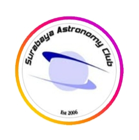
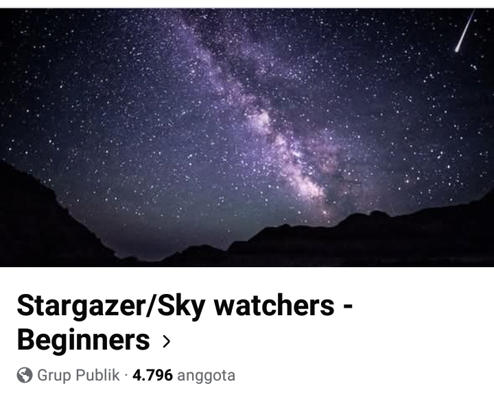

Are you ready to explore celestial phenomena or care for cute plants?

Surabaya Astronomy Club is a community of amateur astronomers located in Surabaya. Click the button below to view the Instagram page.
Komunitas Hidroponik Surabaya is a community about how to care for plants through hydroponics. The advantages of hydroponics is land-saving and can adjust the environment according to the needs of the plants. Click the button below to visit the Facebook page .
Stargazer Lounge is a prominent online astronomy community. It provides a space for stargazers to discuss observing, ask for advice, and socialize with like-minded people.Click the button below to visit the website page.
The National Gardening Association (NGA) is a prominent US-based nonprofit founded in 1971. It serves as an educational and social hub for plant lovers, offering comprehensive gardening databases, how-to courses, and industry market research. Click the button below to visit the website page
Cloudy Nights is a massively popular online community and forum for amateur astronomers and astrophotographers. It is one of the most widely read resources on the internet for discussing telescopes, imaging equipment, and stargazing techniques. Click the button below to visit the website page

Stargazer/Sky watchers - Beginners is a public Facebook group for astronomers looking to join. Here you can find information about celestial phenomena. Click the button below to visit the Facebook page
Have questions? Any suggestions? We're ready to hear your feedback and complaints.